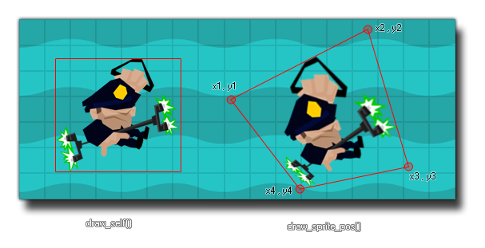

draw_sprite_pos(sprite, subimg, x1, y1, x2, y2, x3, y3, x4, y4, alpha);
| Argumento | Descripción |
|---|---|
| sprite | El índice del sprite para dibujar. |
| subimg | El subimg (frame) del sprite para dibujar (image_index o -1 se correlaciona con el cuadro actual de animación en el objeto). |
| x1 | La primera coordenada x |
| y1 | La primera coordenada y |
| x2 | La segunda coordenada x |
| y2 | La segunda coordenada y |
| x3 | La tercera coordenada x |
| y3 | La tercera coordenada y |
| x4 | La cuarta coordenada x |
| y4 | La cuarta coordenada y |
| alpha | El alfa del sprite (de 0 a 1 donde 0 es transparente y 1 opaco). |
Devoluciones: N / A
Con esta función, puede dibujar un sprite distorsionado sobre el área definida por las cuatro coordenadas de esquina. Los primeros dos argumentos son el sprite para dibujar y la sub-imagen del sprite (lo mismo que en la función draw_sprite ) pero los siguientes son los que definen la posición de cada una de las cuatro esquinas del cuadro delimitador del sprite dado. Estos deben darse en el sentido de las agujas del reloj, por lo que la primera coordenada es la parte superior izquierda, luego la parte superior derecha, luego la parte inferior derecha y finalmente la parte inferior izquierda. También puede establecer un valor para el alfa del sprite para dibujarlo con transparencia. La imagen a continuación ilustra cómo funciona esta función: 
draw_sprite_pos(sprite_index, image_index, x - 100, y - 50, x - 50, y +150, x + 100, y + 200, x + 100, y, 1);
El código anterior dibujará el sprite asociado con la instancia que ejecuta el código distorsionado alrededor de la posición x / y de la instancia y con un alfa completamente opaco.